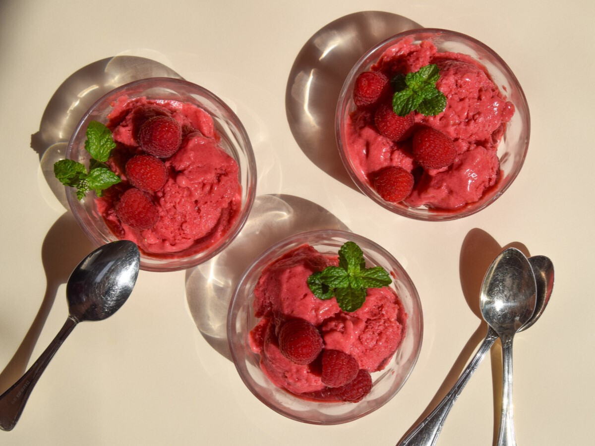
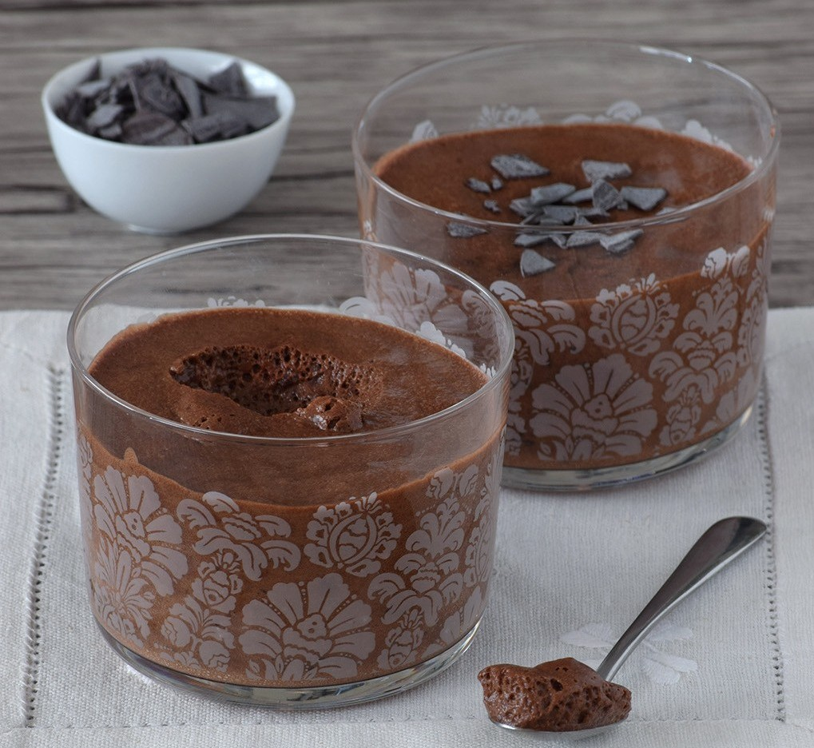
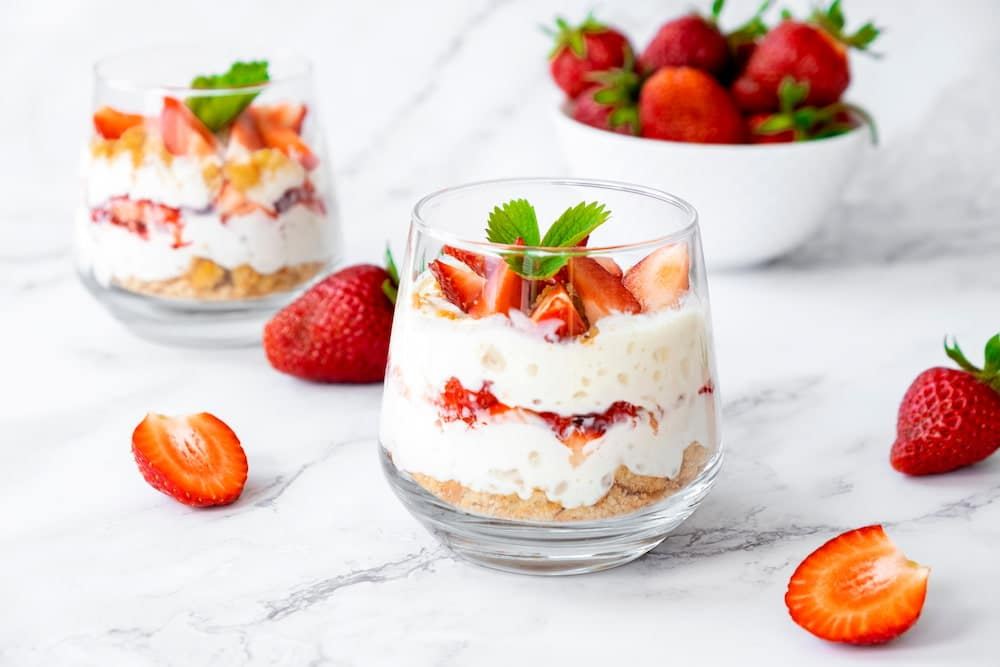

Helado de frambuesa casero – fresco y cremoso
Este helado de frambuesa casero es refrescante, cremoso y lleno de fruta natural. Ideal para el verano o para disfrutar en cualquier época del año, es una opción ligera y deliciosa para toda la familia, con poco azúcar añadido y un sabor que invita a repetir. Gracias a un pequeño secreto en su elaboración, logra una textura suave sin cristales de hielo, ¡perfecto para disfrutar en casa!
- Frambuesas – 450 g
- Plátano – 2 unidades
- Nata montada – 65 ml
- Miel – 30 ml
Primero, lava las frambuesas y tritúralas hasta obtener un puré homogéneo. Luego añade el plátano troceado, la miel y la nata montada, y bate todo hasta que la mezcla quede cremosa y uniforme. Finalmente, pasa la crema a un envase con tapa, como una tarrina de helado, y guarda en el congelador hasta que esté firme y lista para disfrutar.

Mousse de chocolate vegana
Esta mousse de chocolate vegana esponjosa es un postre delicioso y sorprendente que no requiere huevos ni productos animales. Su textura ligera y aireada se logra gracias a la aquafaba, el líquido de cocer legumbres, que permite disfrutar de una mousse auténtica y cremosa. Ideal para veganos, alérgicos o simplemente para quienes quieren probar algo diferente y sorprendentemente sencillo de preparar.
- Chocolate negro de buena calidad – 115 g
- Aquafaba (líquido de conserva de legumbres) – 165 g
- Azúcar (opcional) – 25 g
- Sal (opcional) – 1 g
- Esencia de vainilla (opcional) – 2 ml
- Licor de café (opcional) – 2 ml
Primero, abrí el bote de garbanzos o alubias y colocá el líquido (aquafaba) en un recipiente limpio. Mientras tanto, derretí el chocolate a baño maría hasta que quede completamente liso y brillante.
Luego, batí la aquafaba con batidora eléctrica hasta que forme picos firmes; si querés un toque más dulce, podés agregar azúcar durante el batido. Una vez lista, incorporá una pequeña parte de la aquafaba al chocolate para igualar texturas y después agregá el resto con movimientos suaves y envolventes para que no pierda aire. Si te gusta, podés sumar una pizca de sal, esencia de vainilla o un chorrito de licor de café.
Por último, repartí la preparación en copas o vasos individuales y llevá a la heladera durante al menos dos horas antes de servir, hasta que tome una textura firme y cremosa.

Vasitos cremosos de chocolate Kinder
Si buscás un postre rápido, sencillo y súper vistoso, estos vasitos de chocolate Kinder son la opción perfecta. No necesitan horno, se preparan en apenas 10 minutos y combinan una base crujiente de galleta con una crema suave y aterciopelada de puro chocolate que se deshace en la boca. Ideales para sorprender en una reunión, una merienda especial o para darte un gusto sin complicarte en la cocina.
- 150 g de galletas tipo Digestive
- 75 g de mantequilla derretida
- 200 g de queso crema
- 45 g de azúcar
- 150 ml de nata líquida
- 125 g de chocolate Kinder
- 4 barritas de Kinder Bueno
- Cacao en polvo (para decorar)
Triturá las galletas y mezclalas con la mantequilla derretida hasta formar una base húmeda. Colocá esta mezcla en el fondo de los vasitos y presioná bien con una cuchara para compactarla.
Aparte, derretí el chocolate junto con la nata hasta que quede una mezcla lisa. Incorporá el azúcar y el queso crema, mezclando hasta lograr una textura cremosa y homogénea. Si querés intensificar el sabor, podés añadir una cucharada de cacao en polvo.
Repartí la crema sobre la base de galleta y llevá los vasitos a la heladera durante al menos 6 horas para que tomen consistencia. Antes de servir, decorá con cacao en polvo y trocitos de Kinder Bueno.

Postre de frutos rojos
Este postre en capas es fresco, delicado y súper vistoso, ideal para celebraciones especiales o para cerrar una comida con algo liviano pero irresistible. Combina una base crocante de galletas con una crema suave y aireada de queso, coronada con frutos rojos frescos que aportan color y un contraste ligeramente ácido. Además, se prepara en solo 15 minutos y no necesita horno.
- 200 g de galletas de vainilla o chocolate
- 50 g de manteca (mantequilla) derretida
- 400 g de queso crema
- 200 ml de crema de leche (nata para montar)
- 100 g de azúcar glas (azúcar impalpable)
- 1 cucharadita de esencia de vainilla
- 200 g de frutos rojos (fresas, arándanos, frambuesas)
- Hojas de menta para decorar
Triturá las galletas hasta obtener una textura tipo arena y mezclalas con la manteca derretida. Repartí la mezcla en el fondo de cuatro copas o vasos, presionando suavemente para compactar. Llevá a la heladera mientras preparás la crema.
Batí el queso crema junto con el azúcar glas y la esencia de vainilla hasta lograr una mezcla suave y sin grumos. En otro recipiente, montá la crema de leche hasta que forme picos firmes e incorporala a la preparación anterior con movimientos envolventes para mantener la textura aireada.
Distribuí la crema sobre la base de galletas y refrigerá hasta el momento de servir. Antes de presentar, decorá con abundantes frutos rojos frescos, un poco más de crema si lo deseás y hojas de menta. Si usás copas más grandes, podés repetir las capas para un efecto más impactante.
